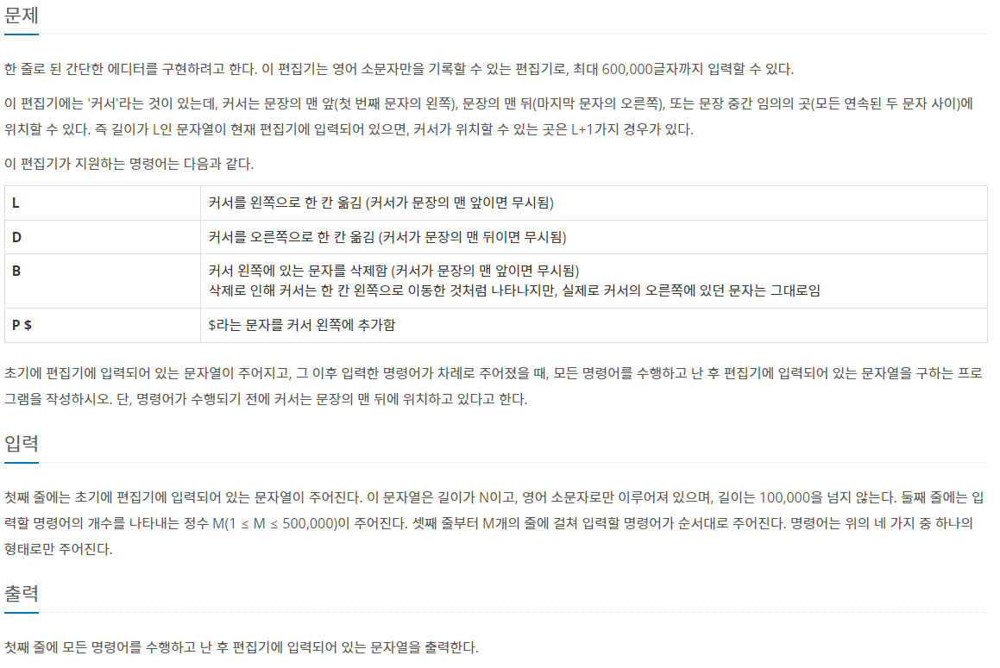
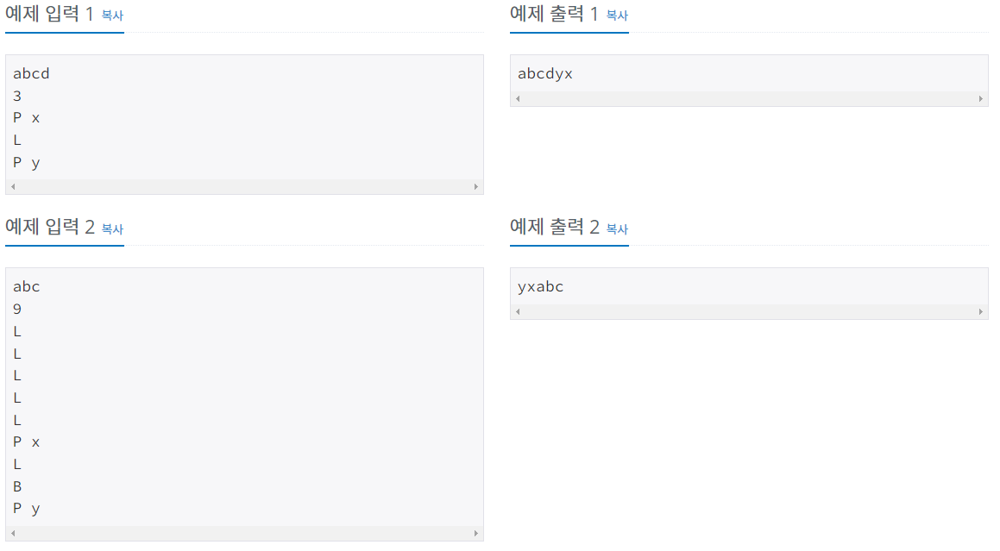
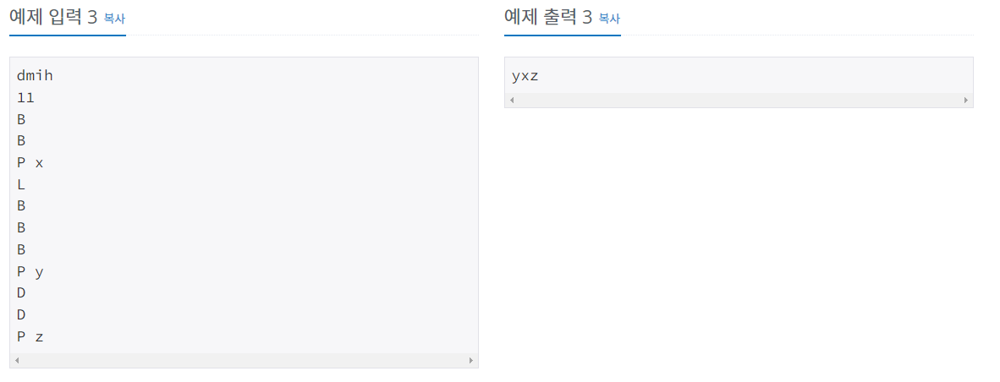
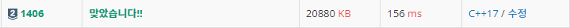

#INFO
난이도 : SILVER2
문제 유형 : Linked List
출처 : https://www.acmicpc.net/problem/1406
  
#SOLVE
연결 리스트 자료구조를 연습할 수 있는 좋은 문제였습니다.
우선 string으로 abc를 문자열 형태로 입력받은 뒤 char형 연결 리스트를 하나 생성해 모두 넣어줍니다.
string str = "";
cin >> str;
list<char> editor;
for(const auto& i : str){
editor.push_back(i);
}
커서는 마지막을 가리켜야 하기에, iterator는 editor(연결 리스트)의 마지막 원소 즉, editor.end()를 가리키도록 합니다.
list<char>::iterator cursor = editor.end();
다음으로 조건문을 이용해 명령을 처리해 줍니다.
L명령은 커서를 왼쪽으로 한 칸 이동시키는 명령입니다. 따라서, cursor(iterator)가 현재 editor(linked list)의 첫 번째 원소 즉, editor.begin()을 가리키고 있는게 아니라면 cursor의 위치를 왼쪽으로 한 칸 이동시켜 줍니다.
(만약 cursor가 editor.begin()을 가리키고 있는데 거기서 위치를 왼쪽으로 한 칸 이동시키면 엉뚱한 값을 가리키게 되기 때문입니다.)
if(input == 'L'){
if(cursor != editor.begin()){
cursor--;
}
}
D명령은 커서를 오른쪽으로 한 칸 이동시키는 명령입니다. L명령과 같은 방식으로 구현해 주시면 되는데, cursor가 현재 editor의 마지막 원소 즉, editor.end()를 가리키고 있는게 아니라면 cursor의 위치를 오른쪽으로 한 칸 이동시켜 줍니다.
else if(input == 'D'){
if(cursor != editor.end()){
cursor++;
}
}
다음으로 P $ 명령입니다. $ 문자를 입력받으면 문자를 커서 왼쪽에 추가합니다. cursor가 가리키는 위치에 입력받은 문자 $을 추가해 주기만 하면 됩니다.
else if(input == 'P'){
cin >> tmp;
editor.insert(cursor, tmp);
}
마지막으로 B 명령입니다. B명령은 커서 왼쪽에 있는 문자를 삭제하는 명령입니다.
현재 cursor가 editor.begin()을 가리키고 있지 않다면 cursor의 위치를 왼쪽으로 한 칸 이동시켜 주고, 그 때 cursor가 가리키는 원소를 삭제합니다.
else if(input == 'B'){
if(cursor != editor.begin()){
cursor--;
cursor = editor.erase(cursor);
}
}#CODE
#include <iostream>
#include <list>
#include <string>
using namespace std;
int main(){
string str = "";
cin >> str;
list<char> editor;
for(const auto& i : str){
editor.push_back(i);
}
list<char>::iterator cursor = editor.end();
int n;
cin >> n;
char input;
char tmp;
while(n--){
cin >> input;
if(input == 'L'){
if(cursor != editor.begin()){
cursor--;
}
}
else if(input == 'D'){
if(cursor != editor.end()){
cursor++;
}
}
else if(input == 'B'){
if(cursor != editor.begin()){
cursor--;
cursor = editor.erase(cursor);
}
}
else if(input == 'P'){
cin >> tmp;
editor.insert(cursor, tmp);
}
}
for(const auto& i : editor){
cout << i;
}
return 0;
}